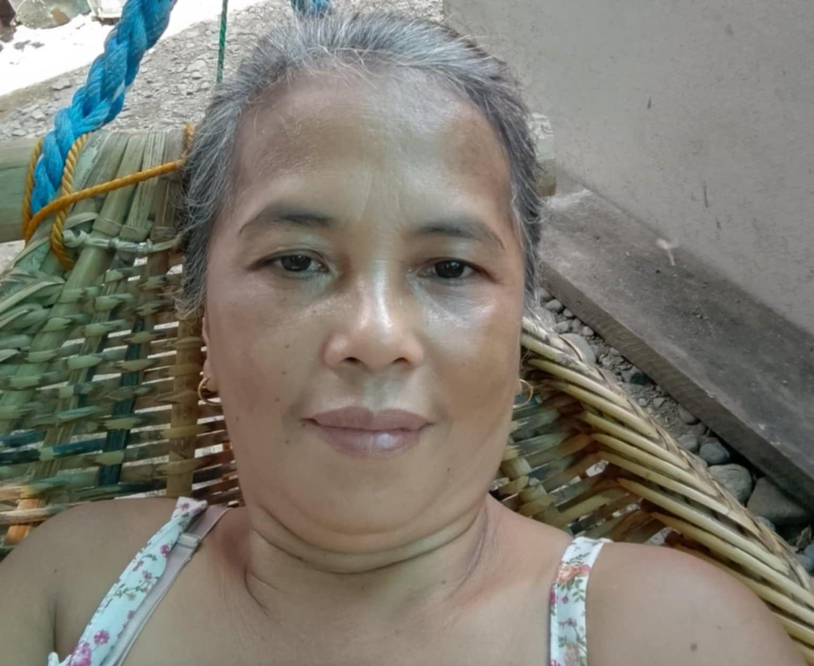
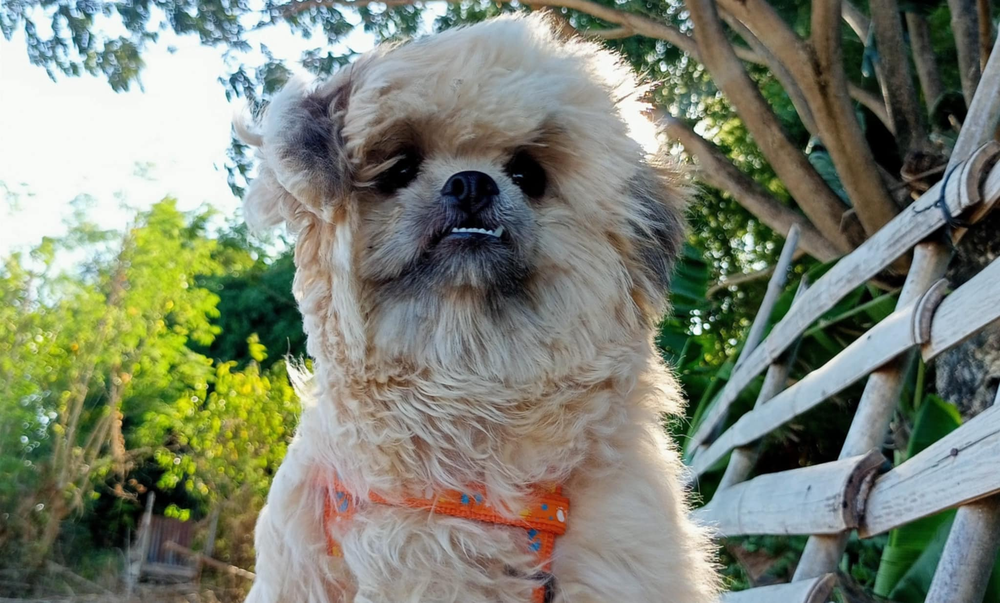

My father is a hardworking man who works at the municipal hall, where he helps with important tasks to support our community. He is very kind and respectful to everyone, and he does his job with honesty and dedication. One thing I admire about him is that he has no bad habits and always sets a good example for me and others. He teaches me the importance of doing the right thing, helping others, and staying humble. I feel very lucky and proud to have him as my father. His kindness and hard work inspire me every day to become a better person. I am always happy to introduce myself as his child because he makes me proud in so many ways. I don't regret that he became my father.

JULIE SARMIENTO OBILLO
My mother is a truly amazing person and a great housewife who dedicates herself completely to taking care of our family. She manages everything at home with so much love, patience, and effort, making sure that our family is always happy and comfortable. What makes her even more special is her broad-minded nature. She is very understanding, supportive, and always ready to listen when I need advice or comfort. Her way of thinking is modern and open, and she encourages me to be independent, confident, and kind to others.
I cannot compare her to anyone else because she is truly one of a kind. She has a unique way of making everyone feel important and loved.
JULINA SARMIENTO OBILLO
My sister and I often act like enemies, but this is just how we show affection for each other. We argue, tease, and sometimes fight over little things, but it’s all part of how we connect and bond. Even though it may look like we don’t get along, we both know that deep down, we care for each other a lot. We might not always express it in the nicest way, but our playful arguments are just a way of having fun together.She brings a lot of energy and fun into my life, and I can always count on her to make things interesting. Our relationship might seem strange to others, but to us, it’s normal, and it’s something we both enjoy. I feel proud to introduce myself as her sibling because she is an important part of my life.

ARKIN
My dog is a very important part of our family. He is more than just a pet to us, he is like a member of our family. We love him so much and he makes our home happier. He was given to us by my sister’s best friend, and we are really thankful for this wonderful gift. Since the day he arrived, he has brought so much joy to our lives.He has a way of making everyone feel better just by being around. Even though he is a dog, he is treated like family, and we care for him as much as we care for each other. He loves being around us, and no matter what happens, he is always there to cheer us up and make us smile. His cuteness never fails to brighten our day.He brightens my heavy and exhausted day.